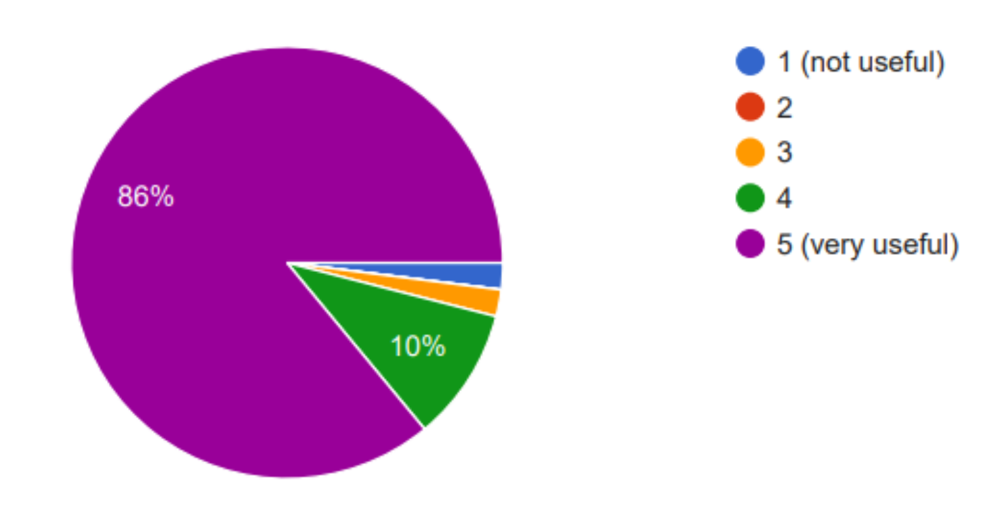
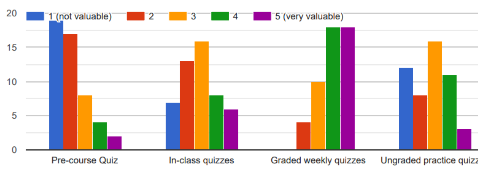

Introducing STACK into Caltech’s “Introductory Methods of Applied Mathematics for the Physical Sciences” Course
Jasmine Bryant, Jinghao Cao, Franca Hoffmann, Jodie Lee, Salvatore Mercuri, Ritvik Teegavarapu
This case study is for informational purposes only, does not constitute an endorsement of STACK by Caltech, and does not represent the official views of Caltech
Introduction
At Caltech, the two-course sequence ACM 95/100 “Introductory Methods of Applied Mathematics for the Physical Sciences” has been part of the core curriculum for decades and is seen by many Caltech students as a rite of passage. It covers Complex Analysis and Differential Equations. The second course in this sequence, ACM 95/100b, focuses on Ordinary and Partial Differential Equations in temporal and spatial domains including the wave, heat and Laplace equations, and introduces many students for the first time to PDEs. As an applied mathematics course, it provides students with fundamental tools like the Sturm-Liouville theory and the method of characteristics. Enrollment is typically around 130–190 students, including undergraduate and PhD students, which is one of the largest class sizes that exist at Caltech, given that the total number of undergraduate students across the institute is less than 1000 students.
Spring term of 2025 saw Franca Hoffmann, Assistant Professor in the Department of Computing and Mathematical Sciences at Caltech, as the new lead instructor for this course along with von Kármán instructor Jinghao Cao and Head Teaching Assistant Ritvik Teegavarapu. This gave the opportunity to innovate and rethink course content and delivery, with the aim to better serve the students and options across campus that build on this course. STACK was used as a core pillar in the refresh of this course in Spring 2025, representing, up to our knowledge, the first time the software has been used at a US institution.
Why STACK?
The incoming instructors observed a number of key challenges to address in the ACM 95/100b course. Being a requirement for many degree options across departments and divisions, this is one of the (relatively few) courses at Caltech where students enroll mainly out of obligation rather than personal interest. The course is taught by the applied mathematics option, and therefore focuses on teaching rigorous mathematical techniques for solving PDEs, whilst many of the students come to the subject of differential equations with a more practical perspective and concrete applications from their discipline in mind. Indeed, students for this class come from a broad range of disciplines, leading to a class of students with varying levels of material exposure, academic maturity and motivation. This high class size also creates significant pressure on teaching staff.
Finally, the course is highly overloaded in content due to the merging of a three-course sequence into a two-course sequence a few years ago. With still the same amount of content and slightly longer lectures instead, students find it challenging to spend enough time on a topic to reach a deeper understanding, particularly in combination with the generally high course load that Caltech students experience.
STACK was identified as a critical tool for addressing these challenges. Automated personalized feedback has shown to support students gain deeper understanding of mathematical concepts. By allowing students to explore problems without the time constraints of problem sets and exams, students can engage with the content in a more low-stakes setting. Of course, the use of automated assessment software generally helps with time pressure on teaching staff as well, especially in settings where the individual learning needs are so heterogeneous. Finally, STACK would be used as an interactive element with in-class quizzes to drive in-person learning and engagement.
The proposal to use STACK in ACM 95/100b went through internal review and IDEMS International supported the Caltech instructor team through server management, question authoring, and post-course analysis.
Delivering STACK at Caltech
When we set out to introduce STACK in Caltech’s “Introductory Methods of Applied Mathematics for the Physical Sciences” Course, a first implementation challenge was the fact that Caltech had switched from Moodle to Canvas as a Learning Management System (LMS) a few years prior, whereas STACK has been developed with a deployment via Moodle in mind. STACK’s integration with an LMS other than Moodle is a common challenge faced by institutions piloting STACK as a new educational tool. The standard method of resolving this is through the use of a Learning Tools Interoperability (LTI) connection, which we implemented between Caltech’s Canvas LMS and a Moodle instance on which STACK is installed. This connection enables seamless integration for Caltech students and staff, without requiring a separate Moodle login. Members of Caltech’s Academic Media Technologies, Caltech’s Information Management Systems and Services, and IDEMS International worked closely for a number of months to develop and test a trusted framework between STACK, Moodle and Canvas, ensuring the security and usability of the LTI solution for delivering STACK in the US.
Another key challenge was the fact that no prior STACK content existed for this course, and STACK question banks were not readily available for relevant topics in partial differential equations. This meant that most of the material had to be developed from scratch.
Course Implementation
The 10-week-long ACM 95/100b course consisted of weekly lectures, office hours by the instructor team and teaching assistants, recitation sessions by the head teaching assistant, handwritten graded assignments, handwritten midterms and finals. As well as this, various STACK-based quizzes were delivered to address the challenges discussed above. Specifically, these were: (1) a one-off pre-course STACK quiz designed to familiarize students with the technology, while refreshing their knowledge of concepts from relevant prior courses; (2) weekly graded STACK assignments taken at home; (3) weekly in-class STACK quizzes taken during a lecture class in an interactive fashion; (4) ungraded STACK practice quizzes with extra material. Questions were authored using a collaborative process between Caltech instructors, who would author questions in a LaTeX document, and support from the University of Edinburgh and IDEMS International, who would then STACKify those questions. These questions would go through two rounds of review and iteration. We also received a significant number of high quality PDE STACK questions from ETH Zurich, some of which we were able to adapt and deliver during the Caltech course. In total, 43 questions were authored from scratch, on top of which 11 ETH questions were adapted for the use in this course.
Anonymous surveys accompanied each STACK quiz in Moodle, enabling students to give their views on what they liked or didn’t like about the STACK content in that quiz. This gave us a crucial real-time view into how students were receiving the system, and allowed us to adapt quickly to any prevalent issues. One particular area of frustration that students had in the first two weeks of the course related to the default Moodle quiz settings of “Deferred feedback”, which meant that students had to submit an entire quiz before seeing which parts they got incorrect. On starting a new attempt, they would have to complete the entire quiz again, including those parts they already had gotten correctly. Changing this to “Adaptive mode” was a quick and easy fix, and this feature was unanimously praised in the final course feedback survey, with 86% of responses considering it very useful. Another key student concern was the feeling that their STACK submissions might be incorrectly graded without any oversight or correction from teaching staff. To address this, we introduced a regrade request activity in Moodle, so that students could submit a request if they believed they had been unfairly graded. Often, this would highlight question bugs, and allow us to perform regrades across all students. Through this system of regular monitoring and active response to anonymous feedback, student trust built while negative feedback dwindled as the term went on.

Feedback and post course
In the final course survey, students were asked their opinions on STACK itself as a resource. Students overwhelmingly valued graded weekly quizzes in particular, but were less keen on the pre-course quiz and the in-class quizzes.

A number of text-based responses were received in the final survey. Students appreciated being able to receive instant feedback, particularly when adaptive mode was used. This, combined with the option to retry quizzes, led to a learning-focused rather than performance focused environment. As one student pointed out in the feedback: “I liked doing them before starting the sets... Having no pressure to ace them, first try, and instead using them to help learn was a nice feature.” STACK questions occurring in the latter half of the course were particularly well received by students. However, there remains room for improvement. Many students felt that some STACK questions were too time-consuming, particularly in the early half of the course.
So that STACK questions could be refined for use in next year’s course, we analyzed student responses within STACK itself, making use of the “Analyze responses” tab in the question dashboard. The “Summary” area of the analysis shows the proportion of attempts ending up at each leaf of the potential response tree, enabling us to quickly identify any areas of a question that were particularly challenging for students. The “Inputs” tab shows all inputs across attempts; any common errors which were not being caught already in the PRTs were then added with specific feedback.
Key learnings
The introduction of new technology to students in such a time-pressured environment is always a challenge. In the end, STACK was generally well received by students in the ACM 95/100b course, and the end of course feedback shows it has great potential going forward. However, it was crucial throughout the course that we continuously sought and monitored anonymous student feedback and used this to improve the STACK experience. We saw that simple things such as Moodle quiz settings can have a dramatic impact on student experience.